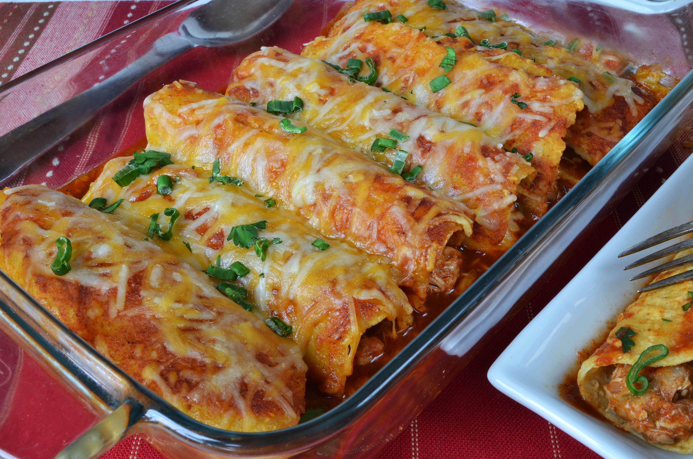

Chicken Enchiladas

Description
This chicken enchilada recipe is easy to make with tortillas, tender chicken, and a deliciously cheesy sauce for a family-pleasing Mexican meal.
Ingredients
- 1 tablespoon olive oil
- 4 skinless, boneless chicken breast halves
- 1 onion, chopped
- 1 3/$ cups shredded Chedda cheese,divided
- 1/2 pint sour cream
- 1/2 teaspoon dried oregano
- 1/2 teaspoon ground black pepper
- (15 ounce) can tomato sauce
- 1/3 cup chopped green bell pepper
- 1 clove garlic, minced
- 1 tablespoon chili powder
- 1/2 teaspoon salt(Optional)
- 1/2 cup water (Optional)
- 8 (10 inch) flour tortillas
- 1(12 ounce) jar taco sauce
Steps
- Cook the chicken, slice it into cubes, then return it to the skillet.
- Add the onion, a cup of cheese, sour cream, and dried herbs.
- Melt the cheese. Stir in tomato sauce, green pepper, garlic, chili powder, and salt.
- Fill the enchiladas and roll them up. Arrange them in a baking dish.
- Top with taco sauce and remaining cheese. Bake until the cheese is melted.
Return Main Menu